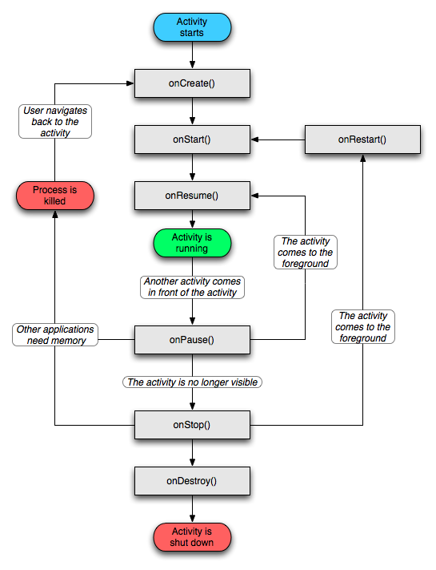

Activity
目录
生命周期
生命周期回调

需要注意的点
如果有数据需要持久化，在 onPause() 的时候就做，因为 onStop() 返回之后 Activity 随时可能被杀死，而在 Pre-HONEYCOMB 版本里 onPause() 返回之后就可能被杀死。
onSaveInstanceState(Bundle) 的调用时机是 Activity 被杀掉之前，onStop() 之前，但因为它不是生命周期回调函数，所以并不能确保所有情况都能被调用到。
configChanges
要特别注意配置变化对生命周期的影响。
如果想屏幕方向变化时 Activity 不销毁重建，在 AndroidManifest.xml 里配置：
<activity
android:configChanges="keyboardHidden|orientation|screenSize|locale"
...
只配置一个 orientation 并不能生效，实际原因还需要好好探究一番，网上很多博客里说的配置了 configChanges 之后生命周期不会有变化，只是 onConfigurationChanged 会被调用到、keyboardHidden|orientation 会阻止生命周期销毁重建等都不准确。
参考：
- https://developer.android.com/reference/android/app/Activity.html#ConfigurationChanges
- https://developer.android.com/reference/android/R.attr.html#configChanges
Activity 的 LaunchMode
standard，标准模式，这也是默认模式。每次启动一个 Activity 都会重新创建一个新的实例。谁启动了这个 Activity，这个 Activity 就运行在启动它的那个 Activity 所在的栈中。
singleTop，栈顶复用模式。如果任务栈的栈顶是目标 Activity 的实例，那么将不会被创建新 Activity，同时栈顶 Activity 的 onNewIntent 会被调用。如果栈顶不是目标 Activity 的实例，则重新创建 Activity。
singleTask，栈内复用模式。是一种单例模式。如果栈内存在目标 Activity，那么多次重复启动不会创建新实例，默认具有 clearTop 效果。
singleInstance，单实例模式。加强的 singleTask，这个模式的 Activity 只能单独地位于一个任务栈中。
Activity 设计的好处
可以很方便地调起别的 Activity（包括应用内和应用外）并获取调用结果。这样即使两个 Activity 来自不同的应用，Activity A 调用 Activity B 处理完自己的 Intent，然后返回 Activity A，无缝切换，就像在同一个应用内一样。
不可见状态就停止活动，节约系统资源。
用栈管理，切换行为符合用户心理预期。
如何一次终止所有 Activity
可以使用 Intent.FLAG_ACTIVITY_CLEAR_TOP 调用栈底的 Activity，然后用一个标记让它 finish 自己。
Intent intent = new Intent(this, BottomActivity.class);
intent.addFlags(Intent.FLAG_ACTIVITY_CLEAR_TOP);
intent.putExtra(FINISH_ALL, true);
startActivity(intent);
或者用一个自定义的比较土的思路：
class BaseActivity extends Activity {
public static boolean sKillAll = false;
@Override
protected void onResume() {
super.onResume();
if (sKillAll) {
finish();
}
}
}
在想要终止所有 Activity 时，栈顶 Activity 将 BaseActivity.sKillAll 置为 true，然后 finish 自己。
Activity 实例泄漏
Activity 实例泄漏时（实例被长于它的对象持有），按 back 键时 onDestroy 仍会被调用到。回到它的实例是 GC 的事情，GC 和 Android 的生命周期方法回调是两回事。